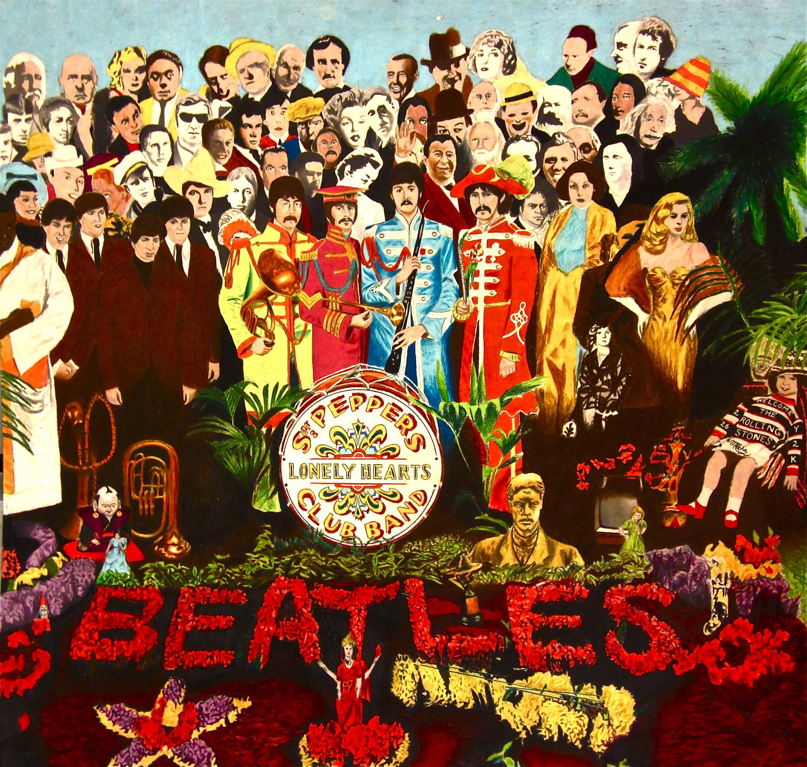
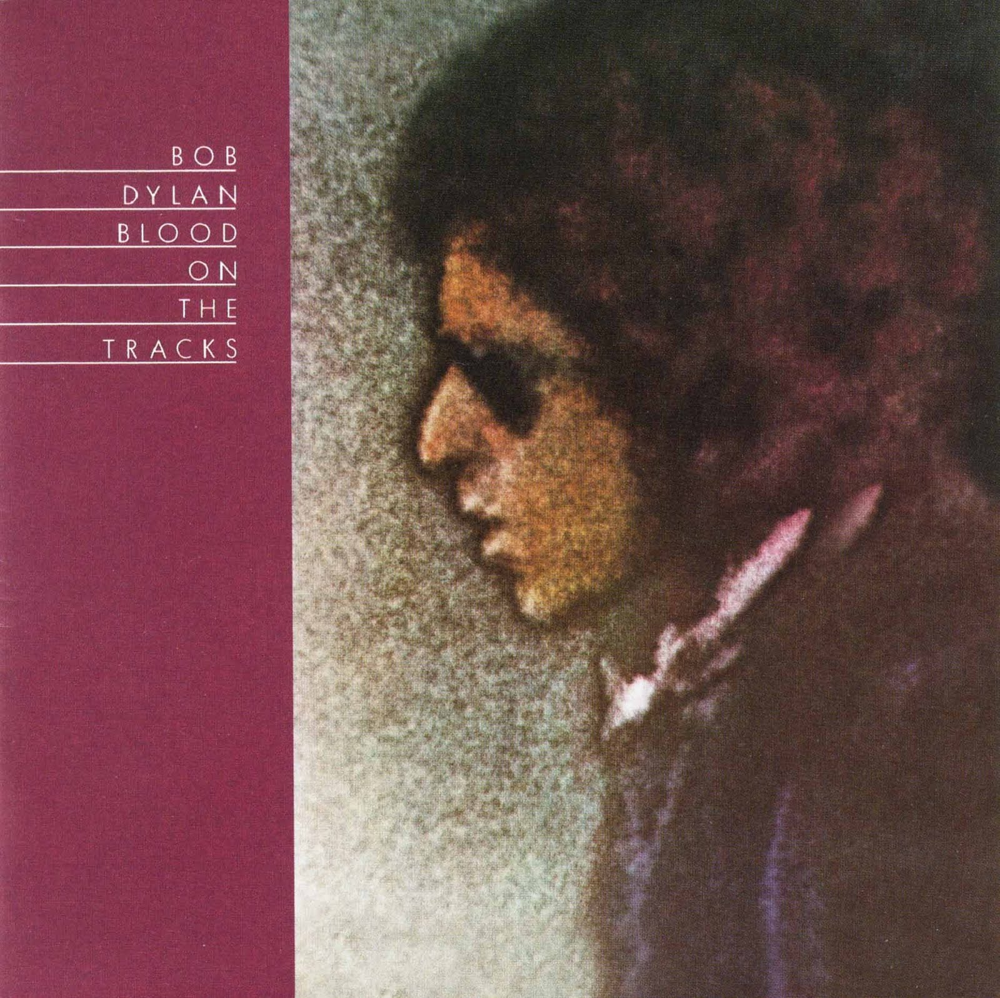
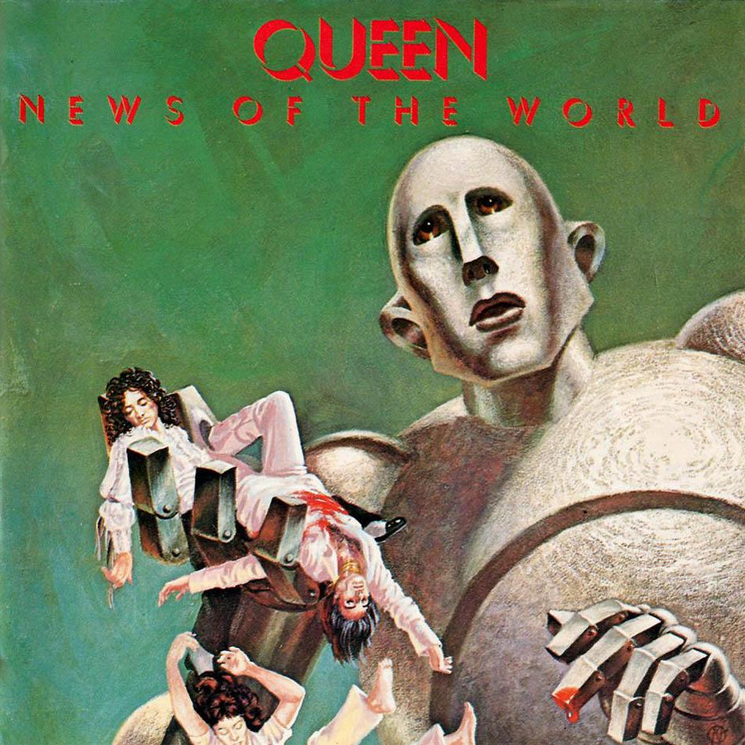
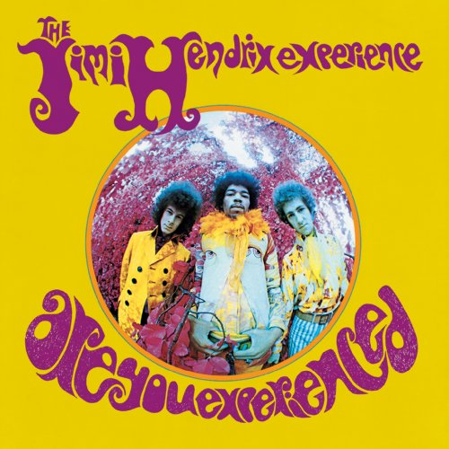

Great Songs to check out!
Song
Album
The Beatles

The band that brought about the modern age of music, The Beatles are the undisputed greatest rock band of all time. Sgt. Pepper's Lonely Hearts Club Band is widely considered the most influencial album of all time. Artists form the Rolling Stones to Eminem credit The Beatles as having massive influence on their music.
#1 Album:
Sargent Pepper's Lonely Hearts Club Band.
Kendrick Lamar

The king of rap today, Kendrick has only released a handful of studio albums, yet still has many calling him the GOAT. Listening to Lamar's music feels like a lesson in the modern workings of our society today. Kenrick is young and his potential seems to be limitless.
#1 Album:

Good Kid Mad City
Bob Dylan

The greatest American poet to ever live, Bob Dylan's voice may be wreched, but his lyrics contain a power and meaning that shook the establishment during one of America's most turbulant times.
#1 Album:
Blood on the Tracks
Queen

By Queen I mean Freddie Mercury, but you already new that. The greatest showman to ever conquer the state, Freddie created rock anthems that to this day are widely regarded as some of the greatest rock songs of all time. For Queen, it was never about lyrical content, but instead about the feeling their music creates. Because of this, we are all screaming, 'WE WILL ROCK YOU!'
#1 Album:
News of the World
Jimi Hendrix

The most technically gifted guitarist of all time, Hendrix's absolutely ablitorated every other front man during one of the greatest times in music history. Even Eric Clapton has been quoted saying Hendrix is the undisputed champoin of the instrument.
#1 Album:
Are you Experianced